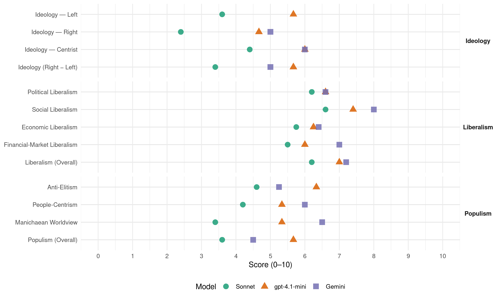

JxCat (Spain, 2023)
manifesto_id 33912_202307
Get full text: This site shows derived annotations and short verbatim quotes only. The full manifesto text is © Manifesto Project / WZB — obtain it via manifesto-project.wzb.eu using the manifesto_id above.
Headline scores
| Dimension | Sonnet | gpt-4.1-mini | Gemini |
|---|---|---|---|
| Populism (Overall) | 3.6 | 5.7 | 4.5 |
| Anti-Elitism | 4.6 | 6.3 | 5.2 |
| People-Centrism | 4.2 | 5.3 | 6.0 |
| Manichaean Worldview | 3.4 | 5.3 | 6.5 |
| Ideology (Right − Left) | 3.4 | 5.7 | 5.0 |
| Liberalism (Overall) | 6.2 | 7.0 | 7.2 |
| Political Liberalism | 6.2 | 6.6 | 6.6 |
| Social Liberalism | 6.6 | 7.4 | 8.0 |
| Economic Liberalism | 5.8 | 6.2 | 6.4 |
| Financial-Market Liberalism | 5.5 | 6.0 | 7.0 |
Evidence per dimension
Economic Liberalism
Gemini · score 7.0 · verified · chunk 1
“vulnerar els principis més elementals de defensa de la competència”
política econòmica que pot fer l’estat, a més de vulnerar els principis més elementals de defensa de la competència. En plena aplicació del 155
Gemini · score 8.0 · verified · chunk 2
“estimular la competencia bancària”
normativa comunitària, estimular la competencia bancària, mitjançant la legislació d’entitats
Gemini · score 7.0 · verified · chunk 3
“competitivitat de les nostres petites i mitjanes empreses”
polítiques que potenciïn i millorin la productivitat I l’eficiència de les nostres petites i mitjanes empreses
Gemini · score 6.0 · verified · chunk 4
“La varietat de proveïdors, la competitivitat”
en essència, és d’èxit i, per tant, s’ha de defensar. La varietat de proveïdors, la competitivitat, milloren els serveis.
Gemini · score 4.0 · verified · chunk 5
“Revisar el sistema tributari i fiscal”
processos productius i invertir per millorar-los. Revisar el sistema tributari i fiscal per tal d’incorporar-hi en major mesura
gpt-4.1-mini · score 5.0 · verified · chunk 1
“Política econòmica. Estimular l’economia, reduir les desigualtats”
d. POSAR L’ECONOMIA I L’OCUPACIÓ AL SERVEI DE CATALUNYA. I. Política econòmica. Estimular l’economia, reduir les desigualtats. La Generalitat ha de disposar de més recursos i de més competències per exercir la política fiscal i pressupostària.
gpt-4.1-mini · score 7.0 · verified · chunk 2
“incentivar la inversió en l’ecoinnovació”
La inversió productiva i sostenible s’ha d’incentivar mitjançant la recuperació de la deducció per inversions amb objectius de millora mediambiental (deducció en la quota del 8 % de la inversió).
gpt-4.1-mini · score 6.0 · verified · chunk 3
“Promoure una fiscalitat més justa i eficient que promogui l’estímul de les exportacions”
…Promoure una fiscalitat més justa i eficient que promogui l’estímul de les exportacions, especialment per a les pimes…
gpt-4.1-mini · score 7.0 · verified · chunk 4
“La varietat de proveïdors, la competitivitat, milloren els serveis”
La sanitat catalana és un model que cal reforçar i millorar però que, en essència, és d’èxit i, per tant, s’ha de defensar. I, el més important, que compta amb el suport de la societat civil que el va crear. La varietat de proveïdors, la competitivitat, milloren els serveis.
Sonnet · score 6.0 · verified · chunk 1
“Competitivitat empresarial”
5. Competitivitat empresarial … 6. Defensa de la micro, petita i mitjana empresa i dels emprenedors
Sonnet · score 6.0 · mixed · chunk 2
“eliminarà les barreres d’entrada de companyies internacionals”
El nou model aeroportuari cal que estableixi polítiques tarifàries pròpies que afavoreixin una millor gestió comercial dels aeroports, eliminarà les barreres d’entrada de companyies internacionals.
Sonnet · score 6.0 · verified · chunk 3
“competitivitat, milloren els serveis”
La varietat de proveïdors, la competitivitat, milloren els serveis. Respecte als professionals de la salut, el propi Ministeri de Sanitat estima
Sonnet · score 6.0 · verified · chunk 4
“La varietat de proveïdors, la competitivitat, milloren els serveis”
La varietat de proveïdors, la competitivitat, milloren els serveis. Respecte als professionals de la salut, el propi Ministeri de Sanitat estima que el 2027
Sonnet · score 5.0 · verified · chunk 5
“Revisar el sistema tributari i fiscal”
Revisar el sistema tributari i fiscal per tal d’incorporar-hi en major mesura criteris ambientals. Promoure i incentivar fiscalment les bones pràctiques ambientals
Financial-Market Liberalism
Gemini · score 7.0 · verified · chunk 2
“diversificar els canals del crèdit”
qualsevol entitat i que diversifiqui els canals del crèdit i la inversió, incrementant
Gemini · score 7.0 · verified · chunk 3
“Garantir el finançament bancari de les pimes”
Garantir el finançament bancari de les pimes, inclosos els autònoms, durant la negociació dels acords
gpt-4.1-mini · score 7.0 · verified · chunk 2
“millorar la regulació del crowdlending i el crowdfunding”
Millorar la regulació del crowdlending i el crowdfunding, i regular la resta del micromecenatge i el microfinançament, amb mesures de declaració responsable per aconseguir el foment de les finances alternatives realitzades a través de les plataformes digitals, i alhora, garantint la protecció dels consumidors.
gpt-4.1-mini · score 5.0 · verified · chunk 3
“Cal exigir a l’Estat el suport a l’ecosistema català dels recursos crediticis procedents de les institucions europees”
…Cal exigir a l’Estat el suport a l’ecosistema català dels recursos crediticis procedents de les institucions europees destinades a les PIMES i el finançament alternatiu al sistema bancari…
Sonnet · score 5.0 · verified · chunk 1
“Política financera. Al costat de l’economia productiva”
iii. Política financera. Al costat de l’economia productiva … iv. Polítiques d’ocupació i treball autònom
Sonnet · score 5.0 · mixed · chunk 2
“estimular la competencia bancària”
En el marc de la normativa comunitària, estimular la competencia bancària, mitjançant la legislació d’entitats de crèdit, per evitar posicions de domini
Sonnet · score 6.0 · verified · chunk 3
“crowdfunding, els business angels, el Mercat Alternatiu de Renda Fixa”
el finançament alternatiu al sistema bancari: crowdfunding, els business angels, el Mercat Alternatiu de Renda Fixa (MARF), el Mercat Alternatiu Borsari (MAB)
Political Liberalism
Gemini · score 8.0 · verified · chunk 1
“acabar amb la vulneració de drets fonamentals a l’Estat espanyol”
primer dels compromisos a assumir en la propera legislature ha de ser acabar amb la vulneració de drets fonamentals a l’Estat espanyol i molt concretament
Gemini · score 6.0 · verified · chunk 2
“governança digital apoderant la ciutadania”
millora de la governança digital apoderant la ciutadania amb polítiques de transparència
Gemini · score 8.0 · verified · chunk 3
“valor cabdal per a la democràcia”
igualtat de dones i homes constitueix un valor cabdal per a la democràcia i és una necessitat essencial
Gemini · score 8.0 · verified · chunk 4
“valor cabdal per a la democràcia”
constitueix un valor cabdal per a la democràcia i és una necessitat essencial en una
Gemini · score 3.0 · verified · chunk 5
“reduït les competències de la Generalitat”
modificacions normatives que han reduït les competències de la Generalitat en matèria de medi ambient i han materialitzat
gpt-4.1-mini · score 3.0 · verified · chunk 1
“vulneració de drets fonamentals dels catalans”
i. Vulneració de drets fonamentals dels catalans. ANTECEDENTS La vulneració dels drets fonamentals dels qui formem part del moviment independentista i especialment dels seus representants, ha estat una constant sobretot des del setembre del 2017 i des de l’1 d’octubre, quan la Policía Nacional i la Guardia Civil van reprimir amb desproporcionada violència la decisió de més de 2 milions de catalans d’anar a les urnes.
gpt-4.1-mini · score 8.0 · verified · chunk 2
“defensa dels drets de les persones usuàries dels serveis digitals”
La directiva de serveis digitals té com a objectiu protegir els drets de les persones usuàries dels serveis digitals i lluitar contra els continguts il·lícits que trobem a internet.
gpt-4.1-mini · score 7.0 · verified · chunk 3
“Garantir l’accés universal a un servei sanitari de qualitat i eficaç”
…Garantir l’accés universal a un servei sanitari de qualitat i eficaç. Reclamar més recursos per a la sanitat catalana davant la situación d’infrafinançament crònic…
gpt-4.1-mini · score 8.0 · verified · chunk 4
“El dret fonamental de la igualtat de dones i homes constitueix un valor cabdal per a la democràcia”
Igualtat de gènere i lluita contra la violència masclista El dret fonamental de la igualtat de dones i homes constitueix un valor cabdal per a la democràcia i és una necessitat essencial en una societat democrática moderna que vol erradicar el sistema patriarcal androcèntric i sexista.
gpt-4.1-mini · score 7.0 · verified · chunk 5
“Recolzarem la millora de les condicions de vida dels animals inclosos a la cadena de producció”
Recolzarem la millora de les condicions de vida dels animals inclosos a la cadena de producció: el trànsit a un sistema lliure de gàbies, la prohibició de sacrifici d’aus en un dia, limitar les macrogranges i producció intensiva de cria d’animals. Recolzarem el tancament de les granges pelleteres i de producció de foie gras, per tractar-se de dues activitats no imprescindibles i d’una extrema crueltat en la seva producció, seguint la tendència de prohibición d’alguns Estats de la Unió Europea.
Sonnet · score 6.0 · verified · chunk 1
“les mancances democràtiques i en matèria de drets i llibertats”
enfortir el cas dels catalans davant la comunitat internacional posant en evidència les mancances democràtiques i en matèria de drets i llibertats davant la comunitat internacional
Sonnet · score 6.0 · verified · chunk 2
“polítiques de transparència i participació”
Impulsar una ciutadania digital: plena, apoderada, capacitada i protegida així com de la millora de la governança digital apoderant la ciutadania amb polítiques de transparència i participació.
Sonnet · score 7.0 · verified · chunk 3
“dret fonamental de la igualtat de dones i homes constitueix un valor cabdal per a la democràcia”
El dret fonamental de la igualtat de dones i homes constitueix un valor cabdal per a la democràcia i és una necessitat essencial en una societat democrática moderna
Sonnet · score 7.0 · verified · chunk 4
“la independència judicial i la lluita contra la corrupció”
alertant l’Estat espanyol de la necessitate d’abordar reformes per garantir la independència judicial i la lluita contra la corrupció
Sonnet · score 5.0 · verified · chunk 5
“derogació de les modificacions normatives que han reduït les competències”
Exigir la derogació de les modificacions normatives que han reduït les competències de la Generalitat en matèria de medi ambient i han materialitzat un model d’estat més centralitzat
Liberalism (Overall)
Gemini · score 8.0 · verified · chunk 1
“acabar amb la vulneració de drets fonamentals a l’Estat espanyol”
primer dels compromisos a assumir en la propera legislature ha de ser acabar amb la vulneració de drets fonamentals a l’Estat espanyol i molt concretament
Gemini · score 7.0 · verified · chunk 2
“estimular la competencia bancària”
normativa comunitària, estimular la competencia bancària, mitjançant la legislació d’entitats
Gemini · score 8.0 · verified · chunk 3
“igualtat de dones i homes”
El dret fonamental de la igualtat de dones i homes constitueix un valor cabdal per a la democràcia
Gemini · score 8.0 · verified · chunk 4
“valor cabdal per a la democràcia”
constitueix un valor cabdal per a la democràcia i és una necessitat essencial en una
Gemini · score 5.0 · verified · chunk 5
“Revisar el sistema tributari i fiscal”
processos productius i invertir per millorar-los. Revisar el sistema tributari i fiscal per tal d’incorporar-hi en major mesura
gpt-4.1-mini · score 4.0 · verified · chunk 1
“vulneració de drets fonamentals dels catalans”
i. Vulneració de drets fonamentals dels catalans. ANTECEDENTS La vulneració dels drets fonamentals dels qui formem part del moviment independentista i especialment dels seus representants, ha estat una constant sobretot des del setembre del 2017 i des de l’1 d’octubre, quan la Policía Nacional i la Guardia Civil van reprimir amb desproporcionada violència la decisió de més de 2 milions de catalans d’anar a les urnes.
gpt-4.1-mini · score 8.0 · verified · chunk 2
“erradicació de la discriminació per edat i per gènere en l’àmbit laboral”
Hem d’avançar en l’erradicació de la discriminació per edat i per gènere en l’àmbit laboral. L’accés a les subvencions i a la contractació pública ha de quedar condicionat al compliment de la normativa de reserva de llocs de treball per a les persones amb discapacitat.
gpt-4.1-mini · score 7.0 · verified · chunk 3
“Garantir l’accés universal a un servei sanitari de qualitat i eficaç”
…Garantir l’accés universal a un servei sanitari de qualitat i eficaç. Reclamar més recursos per a la sanitat catalana davant la situación d’infrafinançament crònic…
gpt-4.1-mini · score 8.0 · verified · chunk 4
“El dret fonamental de la igualtat de dones i homes constitueix un valor cabdal per a la democràcia”
Igualtat de gènere i lluita contra la violència masclista El dret fonamental de la igualtat de dones i homes constitueix un valor cabdal per a la democràcia i és una necessitat essencial en una societat democrática moderna que vol erradicar el sistema patriarcal androcèntric i sexista.
gpt-4.1-mini · score 8.0 · verified · chunk 5
“Establiment de la possibilitat de deducció estatal a l’IRPF de les despeses veterinàries”
Establiment de la possibilitat de deducció estatal a l’IRPF de les despeses veterinàries, per tal d’afavorir els tractaments clínics dels animals. Inclusió a l’Estatut dels Treballadors del reconeixement del dret a permís retribuït per malaltia o mort d’un animal de la família.
Sonnet · score 6.0 · verified · chunk 1
“una Europa més democràtica i transparent”
Seguirem treballant per una Unió Europea més democràtica i transparent, amb un clar lideratge polític i econòmic al món
Sonnet · score 6.0 · verified · chunk 2
“eliminarà les barreres d’entrada de companyies internacionals”
El nou model aeroportuari cal que estableixi polítiques tarifàries pròpies que afavoreixin una millor gestió comercial dels aeroports, eliminarà les barreres d’entrada de companyies internacionals.
Sonnet · score 7.0 · verified · chunk 3
“dret fonamental de la igualtat de dones i homes constitueix un valor cabdal per a la democràcia”
El dret fonamental de la igualtat de dones i homes constitueix un valor cabdal per a la democràcia i és una necessitat essencial en una societat democrática moderna
Sonnet · score 7.0 · verified · chunk 4
“la independència judicial i la lluita contra la corrupció”
alertant l’Estat espanyol de la necessitate d’abordar reformes per garantir la independència judicial i la lluita contra la corrupció
Sonnet · score 5.0 · verified · chunk 5
“Revisar el sistema tributari i fiscal”
Revisar el sistema tributari i fiscal per tal d’incorporar-hi en major mesura criteris ambientals. Promoure i incentivar fiscalment les bones pràctiques ambientals
Anti-Elitism
Gemini · score 8.0 · verified · chunk 1
“els diferents governs de Madrid, governi qui governi, sotmeten el país”
persecució a través de la qual els diferents governs de Madrid, governi qui governi, sotmeten el país. Ho fem amb la força d’un Ja n’hi ha prou.
Gemini · score 6.0 · verified · chunk 2
“satisfer clientelismes polítics”
prioritats la centralització de l’Estat i satisfer clientelismes polítics.. L’Estat espanyol és
Gemini · score 4.0 · verified · chunk 3
“privilegiar les empreses molt grans, les indústries oligopolístiques”
permanent tendència del govern espanyol a privilegiar les empreses molt grans, les indústries oligopolístiques i especialment les derivades d’antics règims
Gemini · score 3.0 · verified · chunk 4
“els qui les exerceixen ens discriminen”
però per això no tenim competències i els qui les exerceixen ens discriminen. Un exemple: els universitaris
gpt-4.1-mini · score 9.0 · verified · chunk 1
“l’Estat espanyol ha conculcat els drets i les llibertats fonamentals dels Catalans”
L’Estat espanyol ha conculcat els drets i les llibertats fonamentals dels Catalans i ho ha fet de forma sistemàtica i estratègica. La seva debilitat estructural l’ha abocat a haver de desmantellar el seu propi estat de dret per combatre unes idees legítimes defensades pacíficament.
gpt-4.1-mini · score 7.0 · verified · chunk 2
“l’acció de govern del govern de l’Estat ha posat la seva prioritat política en continuar la centralització de l’estat i el desenvolupament a partir d’una política clientelar”
Els temps d’incertesa actuals, l’acció de govern del govern de l’Estat ha posat la seva prioritat política en continuar la centralització de l’estat i el desenvolupament a partir d’una política clientelar amb determinats àmbits enlloc de posar èmfasi en la priorització de polítiques socials I econòmiques pensades holísticament .
gpt-4.1-mini · score 3.0 · verified · chunk 3
“El govern espanyol s’ha de fer càrrec del 5% de reducció del pressupost de la PAC”
…respecte el Pla Estratègic Català en matèria agroalimentària… El govern espanyol s’ha de fer càrrec del 5% de reducció del pressupost de la PAC pel període 2021-2027, el qual repercuteix en el Pla de Desenvolupament Rural…
Sonnet · score 7.0 · verified · chunk 1
“la seva injustícia, amb la seva corrupció”
La confrontació amb l’estat espanyol, amb la seva injustícia, amb la seva corrupció, amb la seva dictadura de les togues
Sonnet · score 5.0 · verified · chunk 2
“la centralització de l’Estat i satisfer clientelismes polítics”
Cal acabar amb la dilapidació de recursos públics destinats a inversions improductives, que tenen com a prioritats la centralització de l’Estat i satisfer clientelismes polítics.
Sonnet · score 4.0 · verified · chunk 3
“permanent tendència del govern espanyol a privilegiar les empreses molt grans”
Aquest plantejament difereix de la permanent tendència del govern espanyol a privilegiar les empreses molt grans, les indústries oligopolístiques i especialment les derivades d’antics règims de l’Estat espanyol.
Sonnet · score 4.0 · verified · chunk 4
“els diferents governs espanyols no han estat previsors”
el col·lectiu s’ha envellit però, sobretot, els diferents governs espanyols no han estat previsors. A Catalunya reclamem més places MIR
Sonnet · score 3.0 · verified · chunk 5
“diferents governs espanyols frenen, sistemàticament”
Encara més veient com els diferents governs espanyols frenen, sistemàticament, la reducció de l’IVA en les despeses veterinàries.
Ideology — Centrist
Gemini · score 8.0 · verified · chunk 1
“la veritable tria en aquestes eleccions és entre Catalunya i Espanya, no entre dretes i esquerres”
- La veritable tria en aquestes eleccions és entre Catalunya i Espanya, no entre dretes i esquerres. - Ens proposem guanyar perquè no ens rendim.
Gemini · score 4.0 · verified · chunk 3
“privilegiar les empreses molt grans, les indústries oligopolístiques”
permanent tendència del govern espanyol a privilegiar les empreses molt grans, les indústries oligopolístiques i especialment les derivades d’antics règims
gpt-4.1-mini · score 7.0 · verified · chunk 1
“Representem la transversalitat de Catalunya. Som fidels al país”
La coalició En aquestes eleccions del 23 de juliol, Junts, Demòcrates de Catalunya i Més Esquerres de Catalunya es presenten en coalició. Representem la transversalitat de Catalunya. Som fidels al país i a l’esperit de Junts pel Sí. Sense deixar de banda les diferents famílies ideològiques, el nostre objectiu és treballar per Catalunya.
gpt-4.1-mini · score 7.0 · verified · chunk 2
“farem un sistema aeroportuari al servei de la gent i de l’economia del país”
1. Traspàs dels aeroports de Barcelona, de Girona, de Reus i de Sabadell: farem un sistema aeroportuari al servei de la gent i de l’economia del país, amb una gestió descentralitzada i amb la participació dels ajuntaments i de la societat civil.
gpt-4.1-mini · score 4.0 · verified · chunk 3
“Defensar el progrés i les oportunitats de les nostres empreses és defensar Catalunya”
…Defensar el progrés i les oportunitats de les nostres empreses és defensar Catalunya. Per això, per millorar de la competitivitat del teixit productiu defensem…
Sonnet · score 5.0 · verified · chunk 1
“Representem la transversalitat de Catalunya”
Representem la transversalitat de Catalunya. Som fidels al país i a l’esperit de Junts pel Sí. Sense deixar de banda les diferents famílies ideològiques
Sonnet · score 5.0 · verified · chunk 2
“Apostar per Catalunya i l’economia catalana”
Fa falta un canvi absolut de prioritats. 1. Apostar per Catalunya i l’economia catalana; 2. Invertir de forma estable i sostinguda en R+D+I
Sonnet · score 5.0 · verified · chunk 3
“mentre els catalans seguim pagant impostos a l’Estat”
Mentre aquesta voluntat no es materialitzi i mentre els catalans seguim pagant impostos a l’Estat, treballarem a les Corts Generals
Sonnet · score 5.0 · verified · chunk 4
“reivindicar un finançament just que ens permeti disposar dels recursos”
I això pasa per reivindicar un finançament just que ens permeti disposar dels recursos que generem. La sanitat catalana és un model que cal reforçar
Sonnet · score 2.0 · verified · chunk 5
“exigir la implicació de l’Estat”
presentem un programa específicament pensat per tal d’exigir la implicació de l’Estat en el benestar i la protecció dels animals
Ideology — Left
gpt-4.1-mini · score 7.0 · verified · chunk 1
“Estimular l’economia, reduir les desigualtats”
ii. Política fiscal. Estimular l’economia, reduir les desigualtats. La Generalitat ha de disposar de més recursos i de més competències per exercir la política fiscal i pressupostària.
gpt-4.1-mini · score 7.0 · verified · chunk 2
“incrementar la inversió pública en R+D en un 10% anual”
Incrementar la inversió pública en R+D en un 10% anual amb un primer objectiu: destinar-hi, com a mínim, el 3% del PIB al final de la legislatura; i, segon objectiu, el compromís d’establir una Estratègia per a la Recerca a mitjà i llarg termini que contempli destinar-hi el 3% del PIB en el lapse més breu possible.
gpt-4.1-mini · score 3.0 · verified · chunk 3
“lluita contra les desigualtats socials”
…Un dels principals reptes que tenim és la lluita contra les desigualtats socials. Cal actuar des de l’arrel invertint en polítiques predistributives i redistributives que garanteixin la igualtat d’oportunitats…
Sonnet · score 4.0 · verified · chunk 1
“reduir les desigualtats”
ii. Política fiscal. Estimular l’economia, reduir les desigualtats
Sonnet · score 4.0 · verified · chunk 2
“combatre les desigualtats, de manera que aportin més els que més tenen”
Que contribueixi a combatre les desigualtats, de manera que aportin més els que més tenen, les rendes més altes, a la vegada que alliberi pressió sobre les rendes mitjanes
Sonnet · score 3.0 · verified · chunk 3
“lluita contra les desigualtats socials”
Un dels principals reptes que tenim és la lluita contra les desigualtats socials. Cal actuar des de l’arrel invertint en polítiques predistributives i redistributives
Sonnet · score 3.0 · verified · chunk 4
“accés universal a la salut, posant atenció especial als més vulnerables”
a Junts tenim com a principi bàsic i irrenunciable l’accés universal a la salut, posant atenció especial als més vulnerables, perquè les desigualtats socials
Sonnet · score 4.0 · verified · chunk 5
“creació d’ocupació en l’economia verda”
Impulsar mesures de suport als sectors ambientals i a la creació d’ocupació en l’economia verda (rehabilitació i gestió energètica, renovables, residus, agricultura ecològica, transport sostenible, ecoturisme, etc.)
Ideology (Right − Left)
Gemini · score 8.0 · verified · chunk 1
“la veritable tria en aquestes eleccions és entre Catalunya i Espanya, no entre dretes i esquerres”
- La veritable tria en aquestes eleccions és entre Catalunya i Espanya, no entre dretes i esquerres. - Ens proposem guanyar perquè no ens rendim.
Gemini · score 6.0 · verified · chunk 2
“perseguit de manera sistemàtica a l’economia”
però ha perseguit de manera sistemàtica a l’economia més potent de l’estat, Catalunya
Gemini · score 3.0 · verified · chunk 3
“privilegiar les empreses molt grans, les indústries oligopolístiques”
permanent tendència del govern espanyol a privilegiar les empreses molt grans, les indústries oligopolístiques i especialment les derivades d’antics règims
Gemini · score 3.0 · verified · chunk 4
“els qui les exerceixen ens discriminen”
però per això no tenim competències i els qui les exerceixen ens discriminen. Un exemple: els universitaris
gpt-4.1-mini · score 7.0 · verified · chunk 1
“Junts assumeix plenament com a estratègia per assolir la plena efectivitat”
D’acord amb la Ponència Política, Junts assumeix plenament com a estratègia per assolir la plena efectivitat de la independència de Catalunya l’enfrontament amb l’Estat espanyol. Un enfrontament que ha de tenir caràcter pacífic, democràtic i no violent amb la determinació d’assumir els riscos de la repressió.
gpt-4.1-mini · score 7.0 · verified · chunk 2
“incrementar la inversió pública en R+D en un 10% anual”
Incrementar la inversió pública en R+D en un 10% anual amb un primer objectiu: destinar-hi, com a mínim, el 3% del PIB al final de la legislatura; i, segon objectiu, el compromís d’establir una Estratègia per a la Recerca a mitjà i llarg termini que contempli destinar-hi el 3% del PIB en el lapse més breu possible.
gpt-4.1-mini · score 3.0 · verified · chunk 3
“lluita contra les desigualtats socials”
…Un dels principals reptes que tenim és la lluita contra les desigualtats socials. Cal actuar des de l’arrel invertint en polítiques predistributives i redistributives que garanteixin la igualtat d’oportunitats…
Sonnet · score 5.0 · verified · chunk 1
“La veritable tria en aquestes eleccions és entre Catalunya i Espanya, no entre dretes i esquerres”
La veritable tria en aquestes eleccions és entre Catalunya i Espanya, no entre dretes i esquerres.
Sonnet · score 4.0 · verified · chunk 2
“la centralització de l’Estat i satisfer clientelismes polítics”
Cal acabar amb la dilapidació de recursos públics destinats a inversions improductives, que tenen com a prioritats la centralització de l’Estat i satisfer clientelismes polítics.
Sonnet · score 3.0 · verified · chunk 3
“permanent tendència del govern espanyol a privilegiar les empreses molt grans”
Aquest plantejament difereix de la permanent tendència del govern espanyol a privilegiar les empreses molt grans, les indústries oligopolístiques
Sonnet · score 3.0 · verified · chunk 4
“reivindicar un finançament just que ens permeti disposar dels recursos”
I això pasa per reivindicar un finançament just que ens permeti disposar dels recursos que generem. La sanitat catalana és un model que cal reforçar
Sonnet · score 2.0 · verified · chunk 5
“creació d’ocupació en l’economia verda”
Impulsar mesures de suport als sectors ambientals i a la creació d’ocupació en l’economia verda (rehabilitació i gestió energètica, renovables, residus, agricultura ecològica, transport sostenible, ecoturisme, etc.)
Ideology — Right
Gemini · score 6.0 · verified · chunk 2
“perseguit de manera sistemàtica a l’economia”
però ha perseguit de manera sistemàtica a l’economia més potent de l’estat, Catalunya
Gemini · score 4.0 · verified · chunk 4
“els qui les exerceixen ens discriminen”
però per això no tenim competències i els qui les exerceixen ens discriminen. Un exemple: els universitaris
gpt-4.1-mini · score 6.0 · verified · chunk 1
“No regalarem els vots a qui no ens paga, a qui ens humilia”
En aquestes eleccions, cap vot a ningú que menteixi i espoliï a la gent de Catalunya, ni a ningú que negui el dret a l’autodeterminació del nostre poble. No regalarem els vots a qui no ens paga, a qui ens humilia, menteix i espia, als qui menystenen la nostra llengua.
gpt-4.1-mini · score 6.0 · verified · chunk 2
“derogar la llei d’unitat de mercat”
Derogar la llei d’unitat de mercat. No és admissible una llei d’unitat de mercat que al mateix temps permet que s’articuli un Real Decret Llei i una política concertada de les diferents institucions de l’Estat: Govern, Corts Generals i Monarquia, per a impulsar la sortida exprés i deslocalització d’empreses catalanes cap a d’altres territoris de l’Estat.
gpt-4.1-mini · score 2.0 · verified · chunk 3
“Imposar una visibilització obligatòria dels productes originaris de la Unió Europea”
…Imposar una visibilització obligatòria dels productes originaris de la Unió Europea en els punts de venda, per diferenciar-los dels productes importats de tercers països i afavorir el consum local i de proximitat…
Sonnet · score 5.0 · verified · chunk 1
“Fluxos migratoris i acollida de refugiats”
x. Fluxos migratoris i acollida de refugiats … La Generalitat té competència exclusiva en l’acollida i integració de refugiats
Sonnet · score 2.0 · verified · chunk 2
“Assumir les competències estatals en aviació civil”
Assumir les competències estatals en aviació civil, regulación tarifària i de navegació i seguretat aèries i crear una nova administració aeroportuària
Sonnet · score 2.0 · verified · chunk 3
“Cal garantir més i millor l’entrada pels punts fronterers”
Cal garantir més i millor l’entrada pels punts fronterers de productes provinents de l’exterior i especialment dels provinents de països tercers.
Sonnet · score 2.0 · verified · chunk 4
“Cal modificar el Codi Penal per combatre la reincidència”
Cal modificar el Codi Penal per combatre la reincidència en els furts per fer front al clima d’inseguretat ciutadana que genera l’activitat delictiva
Sonnet · score 1.0 · verified · chunk 5
“distribució territorial entre les comunitats autònomes”
Reclamar la distribució territorial entre les comunitats autònomes dels recursos destinats a materialitzar polítiques de recerca, mitigació i adaptació al canvi climàtic.
Manichaean Worldview
Gemini · score 8.0 · verified · chunk 1
“qui no ens paga, a qui ens humilia, menteix i espia”
No regalarem els vots a qui no ens paga, a qui ens humilia, menteix i espia, als qui menystenen la nostra llengua.
Gemini · score 5.0 · verified · chunk 2
“perseguit de manera sistemàtica”
però ha perseguit de manera sistemàtica a l’economia més potent de l’estat
gpt-4.1-mini · score 9.0 · verified · chunk 1
“la persecució política i ideològica, tenim represaliats, exiliats i presos”
Catalunya ha perdut competències i recursos econòmics, ha rebut atacs a la llengua i a la cultura catalanes, la taula de diàleg ha estat inútil, i seguim patint persecució política i ideològica, tenim represaliats, exiliats i presos. A Junts apel·lem a la indignació a través d’una actitud combativa, ferma i compromesa.
gpt-4.1-mini · score 5.0 · verified · chunk 2
“clientelismes polítics.. L’Estat espanyol és el país europeu amb més línies de tren d’alta velocitat i el que té menys usuaris per Km”
Cal acabar amb la dilapidació de recursos públics destinats a inversions improductives, que tenen com a prioritats la centralització de l’Estat i satisfer clientelismes polítics.. L’Estat espanyol és el país europeu amb més línies de tren d’alta velocitat i el que té menys usuaris per Km. Cap Línia no és sostenible, i les que s’estan construint encara menys.
gpt-4.1-mini · score 2.0 · verified · chunk 3
“amenaces que representen per la cabana ramadera i pels cultius catalans les malalties del bestiar”
…Defensar els interessos del sector agrari català davant de la UE en relació amb les amenaces que representen per la cabana ramadera i pels cultius catalans les malalties del bestiar o les plagues importades dels vegetals…
Sonnet · score 6.0 · verified · chunk 1
“a qui ens humilia, menteix i espia”
No regalarem els vots a qui no ens paga, a qui ens humilia, menteix i espia, als qui menystenen la nostra llengua
Sonnet · score 3.0 · verified · chunk 2
“ha perseguit de manera sistemàtica a l’economia més potent”
ha predicat ‘unitat de mercat’, però ha perseguit de manera sistemàtica a l’economia més potent de l’estat, Catalunya, per deslocalitzar empreses
Sonnet · score 3.0 · verified · chunk 3
“l’actitud i les accions de l’Estat Espanyol impedeixen”
però que l’actitud i les accions de l’Estat Espanyol impedeixen que puguem gaudir de la riquesa que ja generem.
Sonnet · score 3.0 · verified · chunk 4
“els atacs dels quals és objecte el model català”
Els constants atacs dels quals és objecte el model català, tant des del Govern espanyol com de determinats partits de la oposició, lluny de buscar una millora
Sonnet · score 2.0 · verified · chunk 5
“mala praxis que cal combatre”
La obsolescència programada és una mala praxis que cal combatre.
People-Centrism
Gemini · score 7.0 · verified · chunk 1
“el dret a l’autodeterminació del nostre poble”
gent de Catalunya, ni a ningú que negui el dret a l’autodeterminació del nostre poble. No regalarem els vots a qui no ens paga
Gemini · score 5.0 · verified · chunk 2
“al servei de la gent”
farem un sistema aeroportuari al servei de la gent i de l’economia del país
gpt-4.1-mini · score 8.0 · verified · chunk 1
“Som els del no a la humiliació. Som els del sí a la feina i a la negociació”
En un moment de desafecció cap els partits, i en un auge evident de les dretes i l’extrema dreta, a Junts encarem aquestes eleccions com una oportunitat per reivindicar els drets de Catalunya i de la seva gent. Som els del no a la humiliació. Som els del sí a la feina i a la negociació en favor de Catalunya.
gpt-4.1-mini · score 6.0 · verified · chunk 2
“farem un sistema aeroportuari al servei de la gent i de l’economia del país”
1. Traspàs dels aeroports de Barcelona, de Girona, de Reus i de Sabadell: farem un sistema aeroportuari al servei de la gent i de l’economia del país, amb una gestió descentralitzada i amb la participació dels ajuntaments i de la societat civil.
gpt-4.1-mini · score 2.0 · verified · chunk 3
“Defensar els interessos del sector agrari català”
…Tendir ponts amb les instàncies comunitàries per fer sentir la nostra veu a Europa i poder defensar els interessos del sector agrari català davant de la UE…
Sonnet · score 7.0 · verified · chunk 1
“Per Catalunya, a Madrid combatrem i lluitarem per tots els drets i tots els recursos dels catalans”
Per Catalunya, a Madrid combatrem i lluitarem per tots els drets i tots els recursos dels catalans. Per això presentem aquest compromís programàtic
Sonnet · score 4.0 · verified · chunk 2
“farem un sistema aeroportuari al servei de la gent”
Traspàs dels aeroports de Barcelona, de Girona, de Reus i de Sabadell: farem un sistema aeroportuari al servei de la gent i de l’economia del país
Sonnet · score 4.0 · verified · chunk 3
“Defensar el progrés i les oportunitats de les nostres empreses és defensar Catalunya”
Defensar el progrés i les oportunitats de les nostres empreses és defensar Catalunya. Per això, per millorar de la competitivitat del teixit productiu defensem:
Sonnet · score 4.0 · verified · chunk 4
“Hem de reclamar el que és just pels ciutadans de Catalunya”
Hem de reclamar el que és just pels ciutadans de Catalunya per tal d’assegurar, entre d’altres, la qualitat i sostenibilitat del nostre sistema de salut
Sonnet · score 2.0 · verified · chunk 5
“la cada vegada més intensa reivindicació”
Tindrem molt present també la cada vegada més intensa reivindicació de transició cap a la pirotècnia insonora
Populism (Overall)
Gemini · score 8.0 · verified · chunk 1
“els diferents governs de Madrid, governi qui governi, sotmeten el país”
persecució a través de la qual els diferents governs de Madrid, governi qui governi, sotmeten el país. Ho fem amb la força d’un Ja n’hi ha prou.
Gemini · score 5.0 · verified · chunk 2
“satisfer clientelismes polítics”
prioritats la centralització de l’Estat i satisfer clientelismes polítics.. L’Estat espanyol és
Gemini · score 3.0 · verified · chunk 3
“privilegiar les empreses molt grans, les indústries oligopolístiques”
permanent tendència del govern espanyol a privilegiar les empreses molt grans, les indústries oligopolístiques i especialment les derivades d’antics règims
Gemini · score 2.0 · verified · chunk 4
“els qui les exerceixen ens discriminen”
però per això no tenim competències i els qui les exerceixen ens discriminen. Un exemple: els universitaris
gpt-4.1-mini · score 9.0 · verified · chunk 1
“Ja n’hi ha prou Catalunya mereix ser un país de primera dins la UE”
Ja n’hi ha prou Catalunya mereix ser un país de primera dins la UE. Ja n’hi ha prou que des de Madrid ens diguin el que ha de passar a Catalunya. El que passa a Catalunya ho decidim des de Catalunya. Ja n’hi ha prou de l’espoli fiscal que patim els treballadors i ciutadans.
gpt-4.1-mini · score 6.0 · verified · chunk 2
“centralització de l’estat i el desenvolupament a partir d’una política clientelar”
Els temps d’incertesa actuals, l’acció de govern del govern de l’Estat ha posat la seva prioritat política en continuar la centralització de l’estat i el desenvolupament a partir d’una política clientelar amb determinats àmbits enlloc de posar èmfasi en la priorització de polítiques socials I econòmiques pensades holísticament .
gpt-4.1-mini · score 2.0 · verified · chunk 3
“El govern espanyol s’ha de fer càrrec del 5% de reducció del pressupost de la PAC”
…El govern espanyol s’ha de fer càrrec del 5% de reducció del pressupost de la PAC pel període 2021-2027, el qual repercuteix en el Pla de Desenvolupament Rural…
Sonnet · score 6.0 · verified · chunk 1
“Ja n’hi ha prou de l’espoli fiscal que patim els treballadors i ciutadans”
Ja n’hi ha prou que des de Madrid ens diguin el que ha de passar a Catalunya. El que passa a Catalunya ho decidim des de Catalunya. Ja n’hi ha prou de l’espoli fiscal que patim els treballadors i ciutadans.
Sonnet · score 4.0 · verified · chunk 2
“la centralització de l’Estat i satisfer clientelismes polítics”
Cal acabar amb la dilapidació de recursos públics destinats a inversions improductives, que tenen com a prioritats la centralització de l’Estat i satisfer clientelismes polítics.
Sonnet · score 3.0 · verified · chunk 3
“permanent tendència del govern espanyol a privilegiar les empreses molt grans”
Aquest plantejament difereix de la permanent tendència del govern espanyol a privilegiar les empreses molt grans, les indústries oligopolístiques i especialment les derivades d’antics règims de l’Estat espanyol.
Sonnet · score 3.0 · verified · chunk 4
“Hem de reclamar el que és just pels ciutadans de Catalunya”
Hem de reclamar el que és just pels ciutadans de Catalunya per tal d’assegurar, entre d’altres, la qualitat i sostenibilitat del nostre sistema de salut
Sonnet · score 2.0 · verified · chunk 5
“diferents governs espanyols frenen, sistemàticament”
Encara més veient com els diferents governs espanyols frenen, sistemàticament, la reducció de l’IVA en les despeses veterinàries.
Social Liberalism